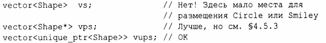

⇐11.2 vector 11.2.2 Проверка выхода за границы диапазона⇒
Как и все контейнеры стандартной библиотеки, vector представляет собой контейнер элементов некоторого типа т, т.е. vector<T>. Почти любой тип может быть типом элемента: встроенные числовые типы (такие, как char, int или double), пользовательские типы (такие, как string, Entry, list<int> или Matrix<double, 2>) или указатели (такие, как const char*, Shape* и double*). Когда вы вставляете новый элемент, его значение копируется в контейнер. Например, когда вы помещаете в контейнер целое число со значением 7, результирующий элемент действительно имеет значение 7. Этот элемент не является ссылкой или указателем на какой-либо объект, содержащий 7. Это свойство обеспечивает нас компактными контейнерами с быстрым доступом. Для программистов, которые заботятся о размерах памяти и производительности во время выполнения, это очень важно.
Если у вас есть иерархия классов (§4.5), которая основана на виртуальных функциях для получения полиморфного поведения, не храните объекты непосредственно в контейнере. Вместо этого храните указатель (или интеллектуальный указатель; § 13.2.1). Например:
